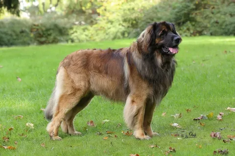

Порода Леонбергер собака
Внешний вид
Леонбергер-крупная, мускулистая и элегантная собака со сбалансированным типом телосложения, средним темпераментом и драматическим присутствием. Голова украшена поразительной черной маской и проецирует отчетливое выражение интеллекта, гордости и доброты породы.
Густая шерсть
Прикольные ушки
Характер породы
| Характеристика | Значения |
| Название породы | Леонбергер |
| Страна происхождения | Германия |
| Вес | 45-60 кг |
| Средняя продолжительность жизни | 9-12 лет |
| Средняя цена | 40-150 тысяч рублей |